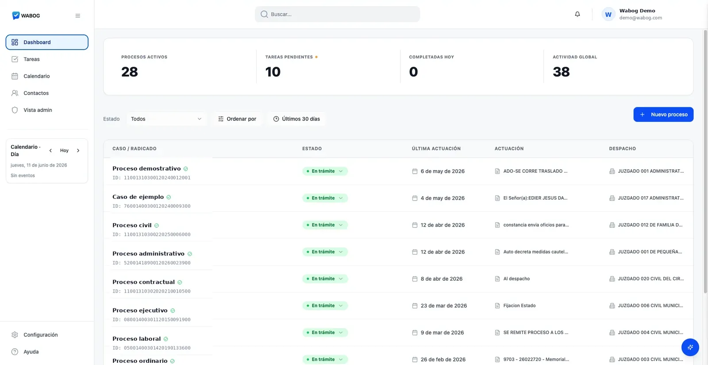

Automatiza la vigilancia de tus procesos en tiempo real con la IA de Wabog. Sincroniza tu primer radicado ahora.

Nuestra plataforma consulta periódicamente los estrados judiciales para traerte las actualizaciones al instante.
Probar ahoraRecibe los archivos adjuntos y resúmenes de actuaciones directamente en tu celular, sin abrir correos molestos.
Activar alertasGenera automáticamente borradores de contestación, recursos y resúmenes estructurados de cada providencia.
Saber másDigita el código de 23 números del expediente que deseas vigilar en nuestro buscador.
La IA de Wabog se conecta a la base de datos judicial y extrae el expediente histórico.
Activa notificaciones automáticas y recibe cada auto o actuación en tu WhatsApp.
Automatiza el seguimiento de tus procesos, redacción de documentos y consultas legales en segundos.
Resolvemos tus dudas sobre cómo automatizar la vigilancia judicial con Wabog.
Sincroniza tu primer proceso judicial gratis en segundos y siente la tranquilidad de no volver a perder ningún término legal.
Sincronizar Radicado Gratis